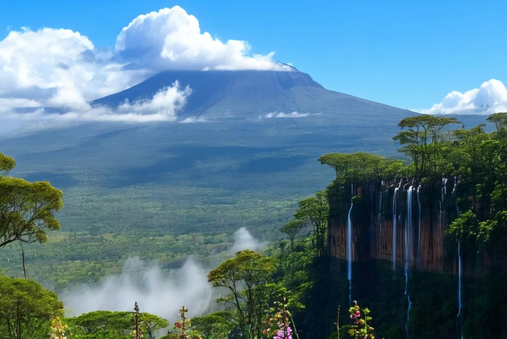

Trade the city noise for the gentle rustle of pine trees and the soothing sounds of the water. Nestled deep within the breathtaking Nyanga National Park, Udu Lodge is your ultimate retreat into Zimbabwe’s untouched wilderness.
Wake up to crisp mountain air and spend your days exploring the scenic trails, bird watching along the Udu Dam, or simply unwinding by a crackling fire under a blanket of stars. Whether you are seeking a romantic getaway, a family adventure, or a peaceful solo escape, our self-catering chalets offer the perfect blend of comfort and wild beauty.
Your adventure begins right at your doorstep. Pack your hiking boots, bring your camera, and get ready to create unforgettable memories in one of Zimbabwe’s most stunning natural landscapes. The wild is calling—will you answer?
Escape to the serenity of Udu Dam. Check our available units and secure your spot in nature today.

Have a question about your stay or need help with a booking? We are here to help.
Udu Dam, Nyanga National Park
Zimbabwe
+263 78 825 2527
(Mon-Fri, 8am - 5pm)